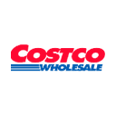

COSTNasdaq · Costco Wholesale Corporation
Fair value (blend propio)
$758.59
vs. $1,102.15 mercado · −31.2%
POSTURA DEL ANÁLISIS: NEUTRAL, CON SESGO BAJISTA — el mejor modelo de negocio del retail (renovación de 92.3% en EE.UU. y Canadá, cuotas que explican 51% del resultado operativo, ROIC propio de 41%) a un precio que ya lo paga de sobra: 47.3x el EPS de los próximos doce meses. El blend de cinco métodos queda −31.2% contra el precio y se parte en dos: los métodos que no usan el precio de Costco (DCF consolidado, DCF por negocio —cuotas y mercadería por separado— y comparables contra minoristas) promedian $434.31; los anclados al mercado (su propio múltiplo y el consenso), $974.79. Ni siquiera el consenso ($1,085.00) llega al precio (ver Sección 13). El precio incluye el dividendo especial de $30 que se paga el 4 de diciembre.
Este documento es análisis independiente con fines informativos y educativos. El autor no es un asesor financiero registrado (no CFA / no matriculado ante la CNV/SEC) y este contenido no constituye una recomendación de compra, venta o mantenimiento para ningún lector en particular. Ver disclosure completo al pie.
Consumo masivo · Retail (clubes de precio con membresía y e-commerce) · Segundo minorista del marco de consumo masivo de este research desk, después de Walmart · Año fiscal de septiembre a agosto: el FY2026 es el período del 1 de septiembre de 2025 al 30 de agosto de 2026, no el año calendario · Próximo reporte: resultados del 1T FY2027 (doce semanas al 22 de noviembre de 2026), previstos para alrededor del jueves 10 de diciembre de 2026
Costco no gana plata vendiendo mercadería: la cobra en la puerta. En el FY2026 las cuotas de membresía sumaron
$5.91 mil millones contra un resultado operativo de $11.69 mil millones: 50.6% de la ganancia
operativa salió de 84.1 millones de socios que pagan entre $65 y $130 por año solo para poder comprar, y que renuevan en
92.3% en EE.UU. y Canadá. Las ventas comparables sin nafta ni tipo de cambio crecieron 7.12% por trimestre en
ocho trimestres, con 3.95 puntos de más visitas: el crecimiento viene de clientes, aunque el tráfico se frenó y en los últimos
cuatro trimestres el ticket ya pesa más. El negocio es excepcional; el problema es el precio. A $1,102.15, Costco cotiza a 47.3x
las ganancias esperadas, 163% por encima de la mediana de sus pares minoristas y el doble que el sector de consumo masivo.
Un DCF anclado en su flujo da $354.66; un DCF que valúa por separado las cuotas y la mercadería, $338.69; los comparables,
$486.88. La reversión a su propio múltiplo da $896.06 y el consenso, $1,085.00. El blend da $758.59.
Cuotas / resultado operativo FY26
50.6%
Renovación EE.UU. y Canadá (mundial)
92.3% (89.8%)
P/E próximos 12 meses
47.3x
Comparables sin nafta 4T FY26 (tráfico)
+6.7% (+3.3%)
01 — Resumen Ejecutivo
La mitad de la ganancia de Costco son cuotas; el precio de la acción paga las dos mitades como si fueran cuotas
Costco cerró su año fiscal 2026 el 30 de agosto con ventas netas de $297.2 mil millones (+10.1%), cuotas de membresía de
$5.91 mil millones (+11.0%), un resultado operativo de $11.69 mil millones (+12.5%) y un EPS de
$20.76 (+14.0%; +13.2% sin el beneficio de $0.15 por acción de las devoluciones de aranceles del 4T). Las ventas comparables
sin nafta ni tipo de cambio crecieron 6.7% en el cuarto trimestre (16 semanas) y 7.5% en las nueve semanas de septiembre y
octubre, el arranque del FY2027. Los resultados del primer trimestre del FY2027 se esperan para alrededor del 10 de diciembre de 2026 (fecha estimada
por calendarios de terceros; Costco no la había confirmado a la fecha de corte).
Este informe gira alrededor del modelo de membresía, porque es lo que hace distinto a Costco. Primero, las cuotas son la mitad de la
ganancia, no "casi toda": explicaban 72% del resultado operativo en el FY2016 y 51% en el FY2026. No porque las
cuotas crezcan poco (+8.4% anual en diez años) sino porque el resultado de la mercadería —lo que queda después de restar las cuotas—
creció 18.9% anual: el margen de la mercadería pasó de 0.88% a 1.94% de las ventas. Segundo, la
renovación es altísima pero dejó de subir: 92.3% en EE.UU. y Canadá y 89.8% en el mundo, contra 93.0% y
90.5% en el 3T FY2024; la compañía lo atribuye a más socios que se suman por internet y a mercados internacionales nuevos. Tercero,
la suba de cuota de septiembre de 2024 terminó de aportar: explicó cerca de 40% del aumento de las cuotas del FY2025 y 30% del FY2026,
y el crecimiento trimestral de las cuotas sin efecto de monedas bajó de +14.0% en el 1T FY2026 a +7.7% en el 4T.
La valuación usa cinco métodos con los pesos de la casa. Un DCF consolidado, con un costo de capital de CAPM (9.33%), da $354.66
(−67.8%). Un DCF por negocio que proyecta las cuotas como socios × cuota × renovación y la mercadería como ventas × margen de mercadería da
$338.69: las cuotas valen $175.38 por acción, la mercadería $132.42 y la caja neta $30.89. Los
comparables contra seis minoristas, sin usar el precio de Costco y sin una regresión que sostenga la prima, dan $486.88. La reversión a su
propio P/E y a su P/E relativo al S&P 500 da $896.06, y el consenso de 42 analistas, $1,085.00. El blend ponderado es de
$758.59, −31.2% contra $1,102.15.
La postura resultante es neutral con sesgo bajista, la misma que Walmart. No es bajista por el negocio: ROIC propio de 40.7%, caja neta, tráfico
positivo en todos los trimestres y un dividendo especial de $30 por acción ($13.3 mil millones) anunciado el 10 de noviembre. Es
bajista por lo que exige el precio: con el resto del caso Base igual, el DCF llega a $1,102.15 solo con un costo de capital de 4.56%, por
debajo del piso de 7.41% que el marco fija para el costo del equity, o con ventas creciendo 38% por año durante cinco años. Las
Secciones 02 a 12 recorren los datos; la Sección 13 construye el fair value.
02 — Historia y Evolución
De un depósito en Seattle a 939 clubes en 14 países, con la misma fórmula
Price Club, el club de precios que inventó el formato en 1976 en San Diego, y Costco, fundado por James Sinegal y Jeffrey Brotman, que abrió su primer
depósito en Seattle en 1983, se fusionaron en 1993; la compañía tomó el nombre de Costco Wholesale en 1999. La fórmula no cambió en cuatro décadas:
pocos artículos (menos de 4,000 por depósito, contra decenas de miles en un supermercado), envases grandes, depósitos sin decoración, rotación altísima
del inventario, márgenes fijados con un techo y una cuota anual que paga la estructura. Kirkland Signature, la marca propia lanzada en 1995, es una de
las marcas de consumo más grandes de EE.UU.
El crecimiento fue constante y casi sin compras de otras empresas: de 715 depósitos en el FY2016 a 939 en el FY2026
(+2.8% anual) y ventas netas que crecieron 9.9% anual en el mismo período, porque cada depósito vende cada vez más:
$321 millones por depósito promedio en el FY2026 contra $166 millones en el FY2016. La cuota básica en EE.UU. subió de
$55 a $60 en 2017 y a $65 en septiembre de 2024; desde 2012 la compañía pagó seis dividendos especiales. En enero de 2024 Ron Vachris reemplazó a Craig
Jelinek como CEO, el tercero en la historia de la compañía.
Ventas netas anuales (sin cuotas de membresía), años fiscales cerrados a fines de agosto, en miles de millones de US$, FY2016-FY2026. El FY2017 y el FY2023 tuvieron 53 semanas. Fuente: SEC EDGAR XBRL y 10-K (cuotas restadas de los ingresos totales).
03 — Modelo de Negocio: Membresía, Depósitos y Geografía
El margen está en la cuota, no en la mercadería: 51% del resultado operativo sale de la puerta
Cómo gana plata. Costco vende con un margen bruto de 11.09% de las ventas netas en el FY2026 (la mitad que
Walmart, con 24.2%): fija un techo de margen por artículo y traslada al socio las mejoras de costo. Con ese
margen apenas cubre sus gastos (9.15% de las ventas) y deja un margen de mercadería de 1.94%. Lo que completa la ganancia es la
cuota: $5.91 mil millones que no tienen costo de mercadería y se cobran por adelantado. La lógica es circular y
virtuosa: cuanto más barato vende, más socios atrae y renueva; cuantos más socios, más volumen y mejores condiciones con los proveedores; y la cuota
le permite no tener que ganar en la góndola. El negocio central se mide así: el socio paga para acceder y la mercadería es casi un servicio al costo.
Cuotas de membresía y resultado de la mercadería (resultado operativo menos cuotas), FY2016-FY2026, en miles de millones de US$. La división es del autor: Costco no asigna costos a la membresía, así que todo el gasto de atender a los socios y la recompensa de 2% de los Executive quedan del lado de la mercadería. Fuente: 10-K (tabla de resultados) y SEC EDGAR XBRL.
Cuotas de membresía como porcentaje del resultado operativo, FY2016-FY2026. Fuente: cálculo propio sobre los 10-K.
La lectura de los dos gráficos es la más importante del informe. Las cuotas eran 72% del resultado operativo en el FY2016,
58% en el FY2021 y 50.6% en el FY2026. El resultado de la mercadería pasó de $1.03 mil millones a
$5.78 mil millones: la nafta, la farmacia, el e-commerce, los viajes y la tarjeta de crédito compartida con Citibank (que paga a Costco una
regalía por las compras fuera del club) agregaron margen fuera de la góndola. Costco sigue siendo un negocio de membresía, pero ya no solo eso.
Socios, renovación y Executive
Los tres tipos de membresía. En EE.UU. y Canadá la membresía Gold Star (individual) y la Business cuestan $65 por año con una tarjeta
adicional para el hogar; la Executive suma $65 más ($130 en total) y devuelve 2% de las compras con un tope de $1,250 por año, además de horarios
exclusivos. Los socios Executive son 50% de los socios pagos (46% en el FY2024) y explican 75.2% de las ventas: son
los que más compran, y su mejora (upgrade) es la palanca de crecimiento de la cuota por socio cuando no hay subas de precio. La recompensa de 2% se registra
como menor venta, no como costo de la membresía: el pasivo por recompensas acumuladas era de $3.04 mil millones al cierre del FY2026.
Segmentos y geografía
Resultado operativo por segmento, FY2026, en miles de millones de US$. Incluye las cuotas de membresía de cada segmento (Costco no las publica por separado). Fuente: 10-K del FY2026, nota 11.
Canadá es el segmento más rentable (5.19% de margen) y EE.UU. el más grande (65% del resultado). Los depósitos fuera de
EE.UU. son 31% del total y crecen más rápido en superficie. Por categoría, alimentos y artículos de consumo más alimentos frescos son
53% de las ventas netas: Costco vende sobre todo lo que se consume y se repone, lo que explica la frecuencia de visita. Los servicios del
depósito y otros negocios (nafta, farmacia, óptica, patio de comidas, e-commerce, viajes) crecieron 19.9% en el FY2026, contra 7.8%
de las categorías centrales; la nafta sola fue 11% de las ventas netas en 774 estaciones.
04 — Desarrollos Recientes y Perspectiva
Un dividendo especial de $30, aranceles devueltos y comparables de 7.5% en el arranque del FY2027
Dividendo especial de $30 por acción. El 10 de noviembre de 2026 el directorio declaró un dividendo extraordinario de $30
por acción (unos $13.3 mil millones, 62% de la caja e inversiones de corto plazo del 30 de agosto), pagadero el 4 de
diciembre a los accionistas registrados al 24 de noviembre, y renovó el programa de recompras por $4,000 millones hasta noviembre de 2030 (el anterior,
de 2023, vencía en enero de 2027 y se había usado en $3,100 millones). Es el mayor de la historia de la compañía. El precio de referencia de este
informe (cierre del 20 de noviembre) todavía incluye el dividendo; todos los métodos de valuación también lo incluyen (la caja del 30 de
agosto está entera en el DCF). Sin el dividendo, el precio equivale a $1,072.15 y el blend, a $728.59.
4T FY2026 (16 semanas al 30 de agosto). Ventas netas de $93.9 mil millones (+11.2%), cuotas de $1.85 mil millones
(+7.3%, +7.7% sin monedas), resultado operativo +13.8% y EPS de $6.75 (+15.0%; +12.4% sin los $0.15 de
devoluciones de aranceles netas de lo que se reinvirtió en precios). Las comparables totales fueron de +9.4% con nafta y monedas y +6.7%
sin ellas: tráfico +3.3% y ticket +3.3%. El margen bruto cayó 11 puntos básicos a 11.02% por la nafta cara (sin nafta subió
20), y el margen del "núcleo sobre el núcleo" —el de las categorías centrales sobre sus propias ventas, la métrica que la gerencia mira— subió
18 puntos básicos sin el efecto de los aranceles.
Aranceles. Costco pagó unos $0.5 mil millones en aranceles bajo la ley IEEPA, que la Corte Suprema invalidó en febrero de 2026.
En el FY2026 recibió $0.18 mil millones de devoluciones (3 puntos básicos de margen bruto netos de la reinversión en precios) y otros
$0.15 mil millones después del cierre; dice que va a invertir "la mayoría" en precios. En marzo de 2026 socios presentaron cuatro demandas
colectivas reclamando que se les devuelva lo que Costco trasladó a precios. El beneficio de $0.15 del 4T no se repite: el EPS de consenso del
FY2027 ($22.80, +9.8%) crece sobre una base que lo incluye.
Septiembre y octubre de 2026 (1T FY2027 en curso). En las nueve semanas al 1 de noviembre las ventas netas crecieron 12.8% a
$54.52 mil millones y las comparables 11.3% con nafta y monedas, pero 7.5% sin ellas: la nafta cara y el dólar débil
explican 3.8 puntos. Por región, EE.UU. 8.1%, Canadá 4.3% y Otros internacionales 7.4%; las ventas
digitales, 20.6% sin monedas. Septiembre (7.6%) tuvo a favor el feriado del Día del Trabajo una semana más tarde (algo más de
50 puntos básicos); octubre dio 7.3%. Canadá viene desacelerando: 3.5% en octubre contra 9.0% en el 1T FY2026.
Costco no publica tráfico mensual.
Plan del FY2027. Hasta 33 aperturas, incluidas 5 relocalizaciones (28 netas: 967 depósitos al cierre, 665 en EE.UU., 120 en
Canadá y 182 en otros mercados), con un capex de unos $7.5 mil millones (+17%). Al 10 de noviembre ya operaba 945
depósitos. Costco no da guía de ventas ni de ganancias; el consenso de S&P Global espera un EPS de $22.80 para el FY2027 y $25.04 para el FY2028.
Depósitos al cierre de cada año fiscal, FY2016-FY2026, y plan del FY2027 (en dorado). Fuente: 10-K de cada año y comunicado del 4T FY2026.
El consumidor de EE.UU. al cierre de este informe. Las ventas minoristas de octubre subieron 0.2% contra septiembre y 6.8% contra octubre de
2025 (Census, avance del 17 de noviembre), con las ventas "de control" en +0.6%. La confianza de la Universidad de Michigan subió a 51.0 en la lectura
preliminar de noviembre desde 48.0, con expectativas de inflación a un año de 4.3%, y el IPC de octubre subió 0.4% mensual. El diésel promedió $5.94 el
galón en la semana al 16 de noviembre, $2.07 más que un año antes: para Costco eso infla las ventas con nafta, no las comparables que mira este informe.
La NRF pronostica ventas navideñas de +4.2%, mitad volumen y mitad precio. Es el mismo bloque de datos que usa el informe de Walmart: ese consumidor
"estirado" busca precio, y Costco y Walmart son los dos lugares a los que va.
05 — Estados Financieros: Tráfico, Ticket, Cuotas y Márgenes
Diez trimestres de comparables que vienen de más visitas, con el ticket ganando peso en el último año
Costco, total compañía: ventas comparables sin nafta ni tipo de cambio descompuestas en frecuencia de compra (tráfico) y ticket promedio, en puntos porcentuales, 3T FY2024 (feb-may 2024) a 4T FY2026 (may-ago 2026). El rombo marca la comparable total. Fuente: comunicados (anexo 99.1) y presentaciones trimestrales (anexo 99.2). En pantallas angostas se muestran los últimos ocho trimestres.
Tres lecturas. Primero, el crecimiento sigue viniendo de clientes: el tráfico fue positivo en todos los trimestres y en ocho trimestres
explicó 55% de la comparable. No aparece la señal de alerta del marco (ticket positivo con tráfico negativo). Segundo, el
tráfico se frenó: de 4.92 puntos promedio en el FY2025 a 2.98 en el FY2026, y en los últimos cuatro trimestres explicó solo
45% de la comparable; en EE.UU. el ticket supera al tráfico desde el 1T FY2026, y en el 3T el tráfico llegó a +1.8% contra un
ticket de +4.9%. Parte del ticket alto es mezcla (oro y plata, electrónica, farmacia con los GLP-1) y no precio, pero el dato a vigilar en el 1T FY2027 es si el
tráfico vuelve a superar a la mitad de la comparable. Tercero, lo digital acelera: 18.4% promedio en ocho trimestres y
22.6% en octubre, con las ventas digitales en 11% de las ventas netas.
Costco EE.UU.: comparables sin nafta ni tipo de cambio descompuestas en tráfico y ticket promedio, 3T FY2024 a 4T FY2026. En pantallas angostas, los últimos ocho. Fuente: comunicados y presentaciones trimestrales.
Comparables sin nafta ni tipo de cambio por región, 3T FY2024 a 4T FY2026, más septiembre (5 semanas) y octubre de 2026 (4 semanas), en %. Fuente: comunicados trimestrales y de ventas mensuales.
Comparables de e-commerce (hasta el 4T FY2025) y de ventas digitales (desde el 1T FY2026), sin tipo de cambio, en %. Fuente: comunicados y presentaciones trimestrales.
E-commerce y medios. Costco publica el crecimiento y el peso de las ventas digitales (11% en el FY2026), no su rentabilidad.
Su plataforma de publicidad (Costco Retail Media) y el marketplace de terceros "Costco Next" existen, pero la compañía no publica sus ingresos ni su
resultado: este informe no los cuantifica. A diferencia de Walmart, cuya publicidad ya mueve el margen, en Costco la palanca de alto margen sigue siendo
la cuota.
Cuotas trimestrales: la suba de 2024 ya está en la base
Crecimiento de las cuotas de membresía sin efecto de monedas, por trimestre, 3T FY2024 a 4T FY2026, en %. El 4T FY2024 está normalizado por la semana extra del FY2023. Fuente: presentaciones trimestrales (anexo 99.2).
Cómo se reconoce la suba de cuota. El 1 de septiembre de 2024 Costco subió la cuota de EE.UU. y Canadá de $60 a $65 (Gold Star y Business)
y la Executive de $120 a $130, con el tope de la recompensa de $1,000 a $1,250, para unos 52 millones de membresías, algo más de la mitad
Executive. Cada socio paga la cuota nueva recién cuando renueva, y Costco reconoce cada cuota en forma diferida, prorrateada en los doce meses de la
membresía. Por eso el efecto entra en dos escalones: las renovaciones de septiembre de 2024 a agosto de 2025 pagan la cuota nueva, y cada una se
reconoce durante el año siguiente; el aumento está completo en la base recién a fines del FY2026. Los números lo confirman: según el 10-K, la suba
explicó cerca de 40% del aumento de las cuotas del FY2025 (unos $0.20 mil millones) y 30% del FY2026 (unos
$0.18 mil millones); el crecimiento trimestral sin monedas pasó de +14.0% en el 1T FY2026 a +7.7% en el 4T, y
sin la suba las cuotas del FY2026 habrían crecido alrededor de 7.7%. Una cota del efecto anual completo: 52 millones de
membresías con +$5 la mitad y +$10 la otra mitad dan unos $0.39 mil millones. Desde el FY2027 las cuotas crecen con socios, mejoras a
Executive y nuevos mercados, sin suba de precio: la anterior suba fue siete años antes (2017), y si se repitiera el intervalo la próxima llegaría hacia 2031.
Tasa de renovación de EE.UU. y Canadá y mundial, 3T FY2024 a 4T FY2026, en %. Fuente: presentaciones trimestrales (anexo 99.2).
Socios pagos y socios Executive, en millones, 3T FY2024 a 4T FY2026. Fuente: presentaciones trimestrales (anexo 99.2).
Renovación y socios. La renovación de EE.UU. y Canadá bajó de 93.0% a 92.3% y la mundial de 90.5%
a 89.8% en diez trimestres. Son niveles altísimos, y la compañía lo
explica por la mezcla: más socios captados con promociones digitales, que renuevan "a una tasa levemente menor", y más peso de mercados nuevos. Pero
dejó de subir. El crecimiento de los socios pagos se desaceleró de +7.8% a +3.8% interanual (6.3% anual en
ocho años); los Executive crecieron 9.3% en el FY2026 y ya son la mitad. Con la renovación mundial del FY2026, Costco pierde unos 8.3
millones de socios por año y suma unos 11.4 millones brutos (cálculo aproximado con los socios de inicio y cierre).
Márgenes, rotación de inventario y ROIC
Margen bruto, gastos de venta y administración (SG&A) y margen de la mercadería, sobre ventas netas; margen operativo sobre ingresos totales; FY2016-FY2026, en %. Fuente: SEC EDGAR XBRL y 10-K.
El margen bruto de Costco (11.09%) es la mitad del de Walmart y una fracción del de cualquier supermercado, y no es una debilidad: es la estrategia.
La compañía no busca subir el margen de la góndola —cuando una categoría gana margen lo devuelve en precios— y lo que mejora es la mezcla (servicios del
depósito, farmacia, nafta, digital) y la productividad (el SG&A pasó de 10.40% a 9.15% de las ventas en diez años). El resultado es
un margen operativo que subió de 3.09% a 3.85% de los ingresos (7.6 puntos básicos por año) y un margen de la mercadería
que se más que duplicó (10.6 puntos básicos por año). Las dos tasas son las anclas del DCF de la Sección 13.
Rotación de inventario: costo de la mercadería sobre inventario promedio, veces por año, FY2016-FY2026. Fuente: SEC EDGAR XBRL.
Costco vende su inventario 14.1 veces por año (26 días; 32 en el FY2016), y las cuentas a pagar equivalen a 117% del
inventario: los proveedores financian más que todo el stock, y Costco cobra al contado (en cuatro días con tarjeta). El capital de trabajo
operativo es negativo ($−16.4 mil millones al cierre del FY2026, contando las cuotas cobradas por adelantado y las recompensas a pagar): cuanto
más crece, más caja libera. El ROIC propio de este informe (resultado operativo después de impuestos sobre patrimonio más deuda menos caja) fue de
40.7% en el FY2026 y 38.0% en el FY2025; medido sobre el capital operativo (activo fijo, arrendamientos y capital de trabajo)
da 41.3%. stockanalysis.com publica 35.7% con su propia definición. Es el más alto de los minoristas de la Sección 08.
06 — Balance y Deuda
Caja neta de $13.7 mil millones, que el dividendo especial se lleva casi entera
Costco casi no tiene deuda: $6.2 mil millones de bonos (de ellos, $2.25 mil millones vencen en los próximos doce meses) contra un EBITDA de
$14.4 mil millones. El patrón se repite: acumula caja durante tres o cuatro años y la devuelve con un dividendo especial. El de $30
usa $13.3 mil millones y deja la caja neta en torno a cero (sin contar la caja que genere el 1T FY2027). No tiene llave de negocio
relevante ni marcas en el balance: lo que vale Costco no está en el activo, está en los socios.
07 — Flujo de Caja, Dividendo y Asignación de Capital
Conversión de caja de 102% y seis dividendos especiales desde 2012
Flujo operativo, capex y flujo de caja libre, FY2016-FY2026, en miles de millones de US$. Fuente: SEC EDGAR XBRL y 10-K.
El flujo operativo del FY2026 fue de $15.8 mil millones y el capex de $6.4 mil millones (2.16% de las ventas
netas): flujo libre de $9.38 mil millones, una conversión de 102% de la utilidad neta (97% en el FY2025),
en la vara de 90%-100% del marco. Una parte es capital de trabajo: $2.33 mil millones en el FY2026 y $1.76 en el FY2025, por inventario que
rota más rápido y mejores plazos con proveedores. Ese flujo es recurrente mientras Costco crezca, y el DCF lo modela así (Sección 13). El capex sube a
unos $7.5 mil millones en el FY2027 por las aperturas.
Costco devuelve caja sobre todo con dividendos especiales, no con recompras: en el FY2026 recompró $0.85 mil millones, 0.17% de su
capitalización, a un precio promedio 16% más bajo que el de la fecha de corte. En diez años devolvió 63% de su utilidad, y retuvo el
resto para abrir depósitos sin endeudarse. El dividendo regular rinde 0.53%: para un inversor de ingreso, Costco tampoco es una acción de
dividendo; el especial es el que cambia el retorno, y no tiene fecha fija.
08 — Comparables de Industria
Costco cotiza a 47.3x: más caro que Walmart y que Amazon, con las mejores comparables y el mejor ROIC del grupo
P/E sobre el EPS de consenso de los próximos doce meses, precios del 20-nov-2026. Amazon, solo como referencia cruzada (fuera del grupo). Fuente: Yahoo Finance (precios), S&P Global vía stockanalysis.com (consenso), modelo del informe de Walmart (pares).
Costco cotiza a 47.3x, 163% por encima de la mediana de los seis minoristas (17.9x), 16% por encima de Walmart,
el doble que el sector de consumo masivo del S&P 500 (23.5x según FactSet, ajustado al 20 de noviembre; 102% más) y por encima de
Amazon (24.0x). Tiene argumentos: las comparables más altas del grupo (6.7% contra una mediana de 3.6%), un crecimiento del EPS
esperado de 9.8% (mediana 5.7%), el ROIC más alto (36% contra 13.5%) y la ganancia más predecible del
sector por las cuotas. La pregunta del marco es si esos argumentos se traducen en múltiplo dentro del grupo.
¿Justifican los fundamentos la prima? Regresión antes que criterio
Ninguna pasa. La relación con las comparables es nula con los seis pares (R² 0.02) porque Walmart cotiza a 40.9x con
comparables de 3.2%; sin Walmart aparece (R² 0.58), pero el criterio exige las dos. Contra el crecimiento del EPS pasa el umbral
solo por Walmart (0.53) y se desarma sin él (0.002). Contra el ROIC y la beta no hay relación. Es decir: en este grupo el mercado no
paga sistemáticamente por comparables, crecimiento, rentabilidad ni estabilidad; paga una prima a los dos gigantes (Walmart y Costco) que ningún fundamento
medible del grupo explica. Por eso los comparables no pueden "justificar" el múltiplo de Costco, y la Sección 13 aplica el criterio de reserva: cuartil
superior del grupo, porque las comparables de Costco están por encima de la mediana.
09 — Gobierno Corporativo y Estructura Accionaria
Una gerencia formada adentro, un directorio estable y accionistas institucionales
Ron Vachris es presidente y CEO desde enero de 2024 (antes, director de operaciones y de compras; más de 40 años en la compañía, empezó manejando
montacargas). Gary Millerchip, ex CFO de Kroger, es CFO desde marzo de 2024, y Javier Polit (ex Mondelez y P&G) dirige sistemas y digital: dos incorporaciones externas en una gerencia formada adentro. Hamilton
James preside el directorio desde 2017. La mayoría de los directivos tiene más de 25 años en la compañía; en 2026 hubo rotación en la segunda línea
(Caton Frates, director de operaciones de EE.UU. y México; Jim Klauer se retiró el 30 de octubre). El 7 de noviembre de 2026 renunció la directora Helena
Foulkes, electa gobernadora de Rhode Island (8-K del 10 de noviembre).
No hay accionista de control: Vanguard tenía 9.8% y BlackRock 7.8% según el proxy de 2025. El bono anual del CEO para el FY2027
es de $1.2 millones base, atado a ventas, resultado antes de impuestos y metas ambientales y sociales (8-K del 16 de octubre de 2026); la mayor parte de
la compensación es en acciones restringidas. La asamblea de enero de 2026 rechazó una propuesta de accionistas sobre riesgo de "greenwashing"; la próxima
es el 21 de enero de 2027. No hubo campañas de accionistas activistas.
10 — Registro de Riesgos
El riesgo central es de valuación: el negocio puede seguir excelente y la acción caer
11 — Catalizadores
Qué puede mover la tesis en los próximos doce a dieciocho meses
12 — Modelo Financiero Proyectado y Momentum de Estimados
El consenso espera un FY2028 de +9.8% de EPS; el precio paga 44.0x ese año
EPS diluido anual, real (FY2024-FY2026) y consenso (FY2027-FY2028). Fuente: comunicados de Costco y S&P Global vía stockanalysis.com (22-nov-2026).
Chequeo contra el consenso. El resultado operativo del FY2027 del caso Base ($13.0 mil millones, +11.7%), con los otros
ingresos netos del FY2026 y una tasa de 25%, equivale a un EPS de $22.98, +0.8% contra el consenso de $22.80: el Base
no es más pesimista que Wall Street en el año 1. La diferencia con el precio no está en los próximos doce meses sino en cuánto se paga por cada dólar de
ganancia: a $1,102.15, el precio equivale a 48.3x el EPS de consenso del FY2027 y 44.0x el del FY2028. El EPS creció 14.6% anual en diez años.
13 — Valuación: Cinco Métodos y el Fair Value
Los métodos independientes del precio dicen $434; los anclados al mercado, $975
Los pesos son los de la casa: método intrínseco 15% (repartido 7.5% en un DCF consolidado y 7.5% en un DCF por negocio, que valúa las cuotas y la
mercadería por separado, como pide el modelo de membresía; el reparto es el mismo que la skill usa para la suma de partes), comparables 25%, reversión
histórica 35% y consenso 25%. Advertencia: la reversión y el consenso parten de cómo el mercado viene valuando a Costco y juntos pesan 60%
del blend; los dos DCF y los comparables no usan el precio ni el múltiplo de Costco en ningún paso. La síntesis muestra el promedio de cada grupo.
Costo de capital. Tasa libre de riesgo de 4.912% (Treasury a 10 años, cierre del 20-nov-2026) y prima de riesgo de mercado de 5.0%,
la fija del marco (la prima implícita de Damodaran al 1 de noviembre era de 4.41%: con ella el DCF Base daría $381.26). La beta de Costco a
cinco años es 0.85, más alta que la mediana de sus pares (0.445); se usa la propia ajustada por Blume (0.67 × beta + 0.33):
0.901, como en Walmart. El costo del equity es de 9.42%, por encima del piso del marco (7.41%). La deuda cuesta 5.41%
antes de impuestos (Treasury más 50 puntos básicos, supuesto propio para un emisor Aa3/A+) y 4.06% después, con una tasa impositiva de 25.0%. La deuda
pesa 1.53% del valor a precios de mercado. El WACC es de 9.33%.
Método 1a — Flujo de caja descontado consolidado (tres escenarios, 7.5%)
Crecimiento: tráfico, ticket y depósitos nuevos por separado. Las ventas netas crecen por frecuencia de compra + ticket + depósitos nuevos.
El Base usa el tráfico real de los últimos ocho trimestres (3.95%), un ticket igual a la inflación de largo plazo (2.5%, no el
3.5% de los últimos cuatro trimestres) y 2.0 puntos de depósitos nuevos: 8.46% por año. Los ingresos totales crecen al mismo
ritmo (las cuotas van implícitas en el margen). Margen: el margen operativo sobre ingresos sube 7.6 puntos básicos por año, el promedio
de diez años (FY2016-FY2026, con dos subas de cuota adentro); Bear y Bull, diez puntos básicos menos y más. Caja: flujo = resultado operativo
después de impuestos + depreciación − capex + capital de trabajo liberado (0.1% de cada dólar de ventas nuevas, lo que liberó en el FY2025 y el
FY2026). La compensación en acciones ya está restada en el resultado operativo. El capex parte de la guía ($7.5 mil millones, 2.30% de las
ventas) y queda en 2.30%.
El DCF Base da $354.66, −67.8% contra el precio, con 68.5% del valor en la perpetuidad. Ni el Bull
($527.48) llega a la mitad del precio. Chequeo de sesgo (la brecha supera el umbral de 30%-40% del marco): (1) costo de capital:
con el costo del equity en el piso del marco (7.41%, WACC 7.36%) el DCF da $485.01; con la beta mediana de los pares,
$433.12; con la prima de Damodaran, $381.26; (2) caja del año 1: el flujo del modelo con los números reales del FY2026 da
$7.35 mil millones contra $9.04 del flujo real sin apalancar (otros conceptos sin movimiento de caja que el modelo no proyecta); con el
factor de conversión del informe de Walmart (k = 1.320, que lleva el capital de trabajo de los últimos dos años a perpetuidad) el DCF daría
$496.14; (3) tráfico y ticket: el Base usa el tráfico de ocho trimestres, más alto que el de los últimos cuatro, y un EPS del año 1 en línea
con el consenso. Ningún ajuste razonable acerca el DCF al precio.
Sensibilidad a las ventas comparables (obligatoria en el marco)
Grilla WACC × crecimiento a perpetuidad (caso Base)
DCF inverso: qué exige el precio. Con el resto del Base igual, el DCF llega a $1,102.15 con un WACC de 4.56% (por debajo de
la propia tasa libre de riesgo, 4.91%, y 4.78 puntos debajo del WACC de CAPM), con un crecimiento a perpetuidad de 7.39%, con ventas que
crecen 38% por año durante cinco años, o con un margen operativo que sube 140 puntos básicos por año hasta 12.3% en el FY2032 (más
del triple del 3.85% del FY2026, y por encima del margen bruto completo de Costco). El precio se sostiene en que el mercado le asigna a Costco un costo
de capital de bono: trata la ganancia de la mercadería con el mismo riesgo que la de las cuotas.
Método 1b — DCF por negocio: cuotas y mercadería por separado (7.5%)
Este método responde a la pregunta del modelo de membresía: ¿cuánto vale cada mitad? Cuotas = socios pagos promedio × cuota por socio. Los socios
evolucionan como socios del año anterior × renovación + altas nuevas; las altas parten de las implícitas del FY2026 (11.4 millones) y crecen con la
cantidad de depósitos (967 en el FY2027 y 28 netos por año después). La renovación del Base es la mundial del FY2026 (89.8%) y la
cuota por socio crece 1.71% por año, el ritmo compuesto de FY2019-FY2026 (incluye una suba de cuota y la mezcla Executive). El negocio de cuotas
no tiene capex ni capital de trabajo propios: su flujo es la cuota después de impuestos. Mercadería = las ventas netas del Método 1a × un margen
de mercadería que sube 10.6 puntos básicos por año (su promedio de diez años), y carga todo el capex, la depreciación y el capital de trabajo.
Bear: renovación un punto menos, cuota por socio 0.75 puntos menos, 22 aperturas netas y margen de mercadería diez puntos básicos menos; Bull, al revés
(+0.7 puntos de renovación, 32 aperturas).
DCF por negocio, caso Base: valor por acción de las cuotas, de la mercadería y de la caja neta, en US$. Fuente: modelo propio.
Resultado: $338.69 (−69.3%), −$15.97 contra el DCF consolidado. Las cuotas valen $175.38 por acción
(57% del valor operativo, 17.6x la cuota después de impuestos del FY2026): las cuotas valen más que la mercadería, aun
cuando en el FY2026 generaron la mitad del resultado, porque no necesitan capex. La mercadería vale $132.42: su flujo libre es chico mientras Costco
abre 28 depósitos por año, y casi todo el valor está en la perpetuidad (66%). Dicho de otra forma: si las cuotas valieran lo del Base, el
precio de mercado le asigna a la mercadería $896 por acción, 92 veces su resultado después de impuestos del FY2026. La mercadería
de Costco es excelente, pero ese múltiplo es el de una empresa de software.
Método 2 — Comparables contra minoristas (independientes del precio de Costco, 25%)
Como ninguna regresión del grupo sostiene un ajuste (Sección 08), se aplica el criterio de reserva declarado: cuartil superior del grupo,
porque las comparables de Costco (6.7%) están por encima de la mediana (3.6%). P/E: 20.14x × el EPS de los próximos doce
meses ($23.31) = $469.45. EV/EBITDA: 14.83x × el EBITDA del FY2026 del 10-K ($14.36 mil millones) más la caja neta con
arrendamientos ($11.12 mil millones, porque el valor de empresa de los pares también los incluye) = $504.32. Ningún paso usa el precio ni el
múltiplo de Costco.
Resultado: $486.88, −55.8% contra el precio. Para llegar al precio con comparables, Costco necesita más que el múltiplo de Walmart:
el techo del rango, con los múltiplos de Walmart, da $848.22.
Método 3 — Reversión histórica: P/E propio y P/E relativo al S&P 500 (35%)
Lectura 1: P/E propio, con la regla de cambio de escalón. En cada cierre de trimestre fiscal (fines de noviembre, febrero, mayo y agosto) se
divide el precio por el EPS diluido de los cuatro trimestres siguientes tal como lo reportó Costco, del cierre de agosto de 2016 al de agosto de 2026:
41 cierres, un P/E "ex post"; para los 4 cierres con trimestres todavía no reportados se usa el consenso (el 1T y el 2T del FY2027 de
consenso trimestral y el resto del año repartido con la estacionalidad del FY2026). El promedio de diez años es de 34.7x. La regla del marco
reconoce una ventana nueva si todos los cierres desde un punto superan el máximo de al menos cinco años previos durante ocho trimestres o más: se
cumple desde el cierre de 2024-02 (11 cierres en 3 años fiscales, todos por encima del máximo previo de 40.8x, de
2021-11), pero por poco: el último cierre (agosto de 2026, 41.4x) la supera por 1.5%. Una ventana que
se sostiene en un margen tan fino es frágil; se aplica porque es la regla, y se muestra el resultado sin ella. La lectura usa el promedio de la ventana,
47.0x, sobre el EPS de los próximos doce meses ($23.31): $1,095.36. Con el promedio de diez años daría
$808.03.
P/E de Costco sobre el EPS de los cuatro trimestres siguientes, agosto de 2016 a agosto de 2026, con el promedio de diez años (34.7x) y el de la ventana desde febrero de 2024 (47.0x).
Lectura 2: P/E relativo al S&P 500. Según FactSet, el P/E forward del S&P 500 promedió 19.1x en diez años. Al 19 de noviembre de 2026
publicaba 17.1x; con la caída de 3.7% del 20 de noviembre y el EPS constante, 16.47x al cierre de corte. El P/E relativo promedio de Costco en diez
años es de 1.82 (cociente de los dos promedios), que aplicado al P/E del índice a la fecha de corte da $696.76 (con el 17.1x del 19 de
noviembre daría $723.42). El relativo actual es de 2.87, muy por encima del histórico. ¿Denominador o negocio? El S&P cotiza
13.8% por debajo de su promedio, y eso explica una parte; pero aun con el índice en su promedio el relativo de Costco sería de 2.48:
es Costco la que se re-valuó, sin que su crecimiento se acelerara (el EPS creció 14.6% anual en diez años y 13.0% en cinco).
Resultado del método (promedio de las dos lecturas): $896.06, −18.7% contra el precio, con un rango de $514.50 (el P/E mínimo
de la década) a $1,270.86 (el máximo). La primera lectura acepta que el mercado paga por Costco lo que pagó desde 2024; la segunda pregunta cuánto
valdría si volviera a su prima histórica sobre el índice.
Método 4 — Consenso de Wall Street (25%)
Síntesis: el blend ponderado
"Football field" de valuación: rango bajo/alto de cada método. Línea roja: precio de mercado ($1,102). Línea azul: blend propio ($759). Rangos: M1a y M1b = Bear a Bull; M2 = medianas a par más caro; M3 = P/E mínimo y máximo de diez años; M4 = rango de precios objetivo.
El blend de $758.59 queda −31.2% contra el precio de $1,102.15. Los métodos que no usan el precio de Costco promedian
$434.31 (−60.6%) y coinciden entre sí: con un costo de capital de CAPM, valuando cuotas y mercadería por separado o contra lo que el mercado paga
por otros minoristas, Costco vale menos de la mitad de su precio. Los métodos anclados al mercado promedian $974.79 (−11.6%): ni su propio
múltiplo desde 2024 junto a su prima histórica sobre el S&P, ni el consenso, llegan al precio. Sin la regla de cambio de escalón (con el P/E propio de diez
años) el blend sería $708.31; con las medianas en lugar del cuartil superior en los comparables, $742.74. Sin el dividendo especial
en los dos lados (blend y precio menos $30), la brecha es −32.0%.
La postura es neutral con sesgo bajista. Neutral porque el negocio es de los mejores del mercado y no muestra ninguna señal de deterioro: tráfico
positivo, renovación arriba de 92% en su mercado principal, cuotas que crecen sin suba de precio, margen de la mercadería en alza y un balance que permite
devolver $13.3 mil millones de una vez. Con sesgo bajista porque el precio exige un costo de capital de bono para una empresa con beta de
0.85, y porque la acción ya mostró que el múltiplo puede comprimirse con el negocio intacto: de 54.5x en febrero de 2025 a 41.4x en
agosto de 2026, antes de volver a 47.3x.
Contexto (no entra al blend): Costco contra el Treasury
Un bono del Tesoro a diez años rinde 2.6 veces el flujo de caja libre de Costco por dólar invertido. El inversor en Costco no compra caja presente:
compra la certeza de que esa caja va a crecer a dos dígitos durante mucho tiempo (el EPS creció 14.6% anual en diez años). El precio supone que esa certeza vale tanto como la de un bono.
14 — Limitaciones del Modelo
Qué asume este análisis, y dónde puede fallar
El DCF consolidado tiene 69% del valor en la perpetuidad: medio punto menos de WACC sube el valor 7.1% y medio punto más lo baja
6.2%. La beta de Costco (0.85) es más alta que la de sus pares; con la mediana de los pares el DCF daría $433.12. El costo de la
deuda es un supuesto propio. El capital de trabajo liberado es el de dos años de crecimiento fuerte y se aplica a cada dólar de ventas nuevas; si los plazos
con proveedores ya no mejoran, el flujo es menor. La caja neta incluye el dividendo especial (igual que el precio) y $2.8 mil millones de cobros con
tarjeta en tránsito, que son caja operativa.
La separación entre cuotas y mercadería es del autor: Costco no asigna costos a la membresía, así que el gasto de atender a los socios y la recompensa de 2% de
los Executive (que se registra como menor venta) quedan del lado de la mercadería. Eso sobrestima el valor de las cuotas y subestima el de la mercadería; el
total no cambia. Las altas de socios son un cálculo aproximado (socios al cierre menos socios al inicio por la renovación mundial), y la renovación es una
métrica en ventana móvil de Costco, no la tasa de abandono del año. Costco no publica tráfico mensual, resultado del e-commerce ni de la publicidad.
Los comparables usan seis pares con una regresión de seis puntos y los datos del informe de Walmart (mismo día y misma fuente); el EPS de los próximos doce
meses de Costco se arma con la fracción de cada año fiscal y el de los pares con dos trimestres y la mitad del año siguiente. La reversión usa un P/E "ex post"
(EPS realizado), no el consenso que el mercado tenía en cada fecha, con precios de fin de mes en lugar del día exacto del cierre fiscal; la ventana posterior
al cambio de escalón se sostiene por un margen de 1.5% en el último cierre. La lectura relativa usa el S&P ajustado al 20 de noviembre, después de
una caída de 3.7% en el día: con el P/E del 19 de noviembre el método subiría unos $13.33 por acción. El 60% del blend corresponde a métodos anclados
en cómo el mercado viene valuando a Costco, por regla fija de la casa. El informe usa el 10-K del FY2026 y las ventas de septiembre y octubre; los resultados
del 1T FY2027, previstos para alrededor del 10 de diciembre de 2026, pueden cambiar las cifras de las Secciones 04, 05 y 12.
Documento elaborado a partir de fuentes públicas: SEC EDGAR, Costco Wholesale Corporation, CIK 0000909832 (10-K del FY2026, presentado el 7-oct-2026, y del
FY2017 al FY2025; 8-K con comunicados y presentaciones de resultados del 1T FY2017 al 4T FY2026 (24-sep-2026); 8-K del 10-jul-2024 (suba de cuota), del
14-oct-2026 (dividendo trimestral), del 16-oct-2026 (bonos de ejecutivos) y del 10-nov-2026 (dividendo especial, recompras y renuncia de una directora);
8-K del 21-ene-2026 (asamblea); DEF 14A 2025; API XBRL companyfacts); comunicados de ventas mensuales de Costco (GlobeNewswire, 7-oct y 4-nov-2026);
calendarios de resultados de terceros (fecha estimada del 1T FY2027); modelo del informe de Walmart de este research desk (pares de retail, 21-nov-2026);
FactSet Earnings Insight (P/E del S&P 500 y de consumo masivo, 20-nov-2026); stockanalysis.com / S&P Global (consenso de EPS, precios objetivo,
betas, ROIC, EV/EBITDA); Census Bureau (ventas minoristas de octubre, 17-nov-2026), Universidad de Michigan (confianza, noviembre preliminar), BLS (IPC de
octubre), EIA (diésel), NRF (pronóstico de la temporada navideña), Damodaran Online (prima de riesgo implícita); Yahoo Finance (precios y rendimiento
del Treasury). Cifras fundamentales con fecha de corte en el 10-K del FY2026 y las ventas de octubre de 2026; precios de mercado al cierre del 20 de
noviembre de 2026; desarrollos corporativos con fecha de corte del 22 de noviembre de 2026.
Sobre el marco de valuación de este informe: Costco es el segundo minorista del marco de consumo masivo de este research desk. Se analiza con
el bloque de retail (ventas comparables sin nafta separadas en tráfico y ticket, membresías, rotación de inventario y ROIC), y el método intrínseco se reparte
entre un DCF consolidado y un DCF por negocio que valúa por separado las cuotas de membresía (socios × cuota × renovación) y la mercadería (ventas × margen de
mercadería); se suman comparables contra minoristas con regresiones previas al criterio, reversión con la regla de cambio de escalón del múltiplo y el
consenso, con los mismos pesos que el resto de la cobertura.
Sobre el autor y la naturaleza de este documento: este informe es un análisis independiente
elaborado por Manfredi Investment Research & Markets con fines exclusivamente informativos y educativos. El
autor no es un asesor de inversión registrado, no está matriculado ante la Comisión Nacional de Valores (CNV), la
SEC, ni ningún otro organismo regulador equivalente, y no mantiene una relación de asesoramiento financiero
personalizado con el lector. Ninguna cifra de este documento —incluido el "fair value" de portada, los escenarios
del Método 1 ni la síntesis de la Sección 13— constituye una recomendación de compra, venta o mantenimiento para
ningún lector en particular, ni considera la situación financiera, los objetivos o el perfil de riesgo individual
de quien lo lee. Los escenarios de valuación son estimaciones propias sujetas a los supuestos declarados
explícitamente en la Sección 13, y no representan guía oficial de Costco ni de ninguna compañía
mencionada salvo donde se cita de forma directa y atribuida. Verificar cifras contra el 10-K/10-Q más reciente de
Costco, y consultar a un asesor financiero matriculado, antes de tomar cualquier decisión de inversión.